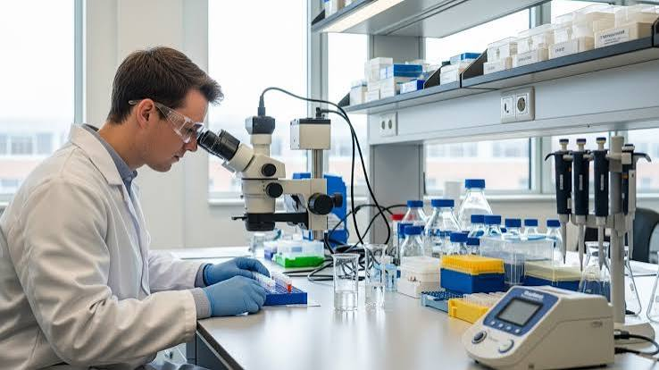
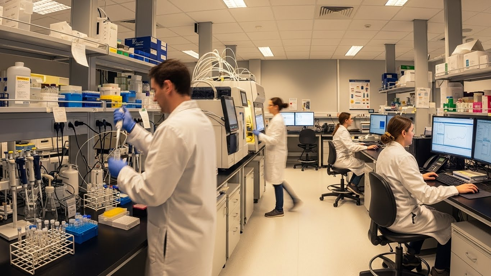

Hi, I'm Dina. A Field Application Specialist and Senior Sales professional in Pathology, supporting the complete Epredia and Sakura Finetek portfolio with technical expertise and workflow optimization for pathology laboratories.
4+
Years in Field
2
Global Portfolios
MBA
Business Strategy
Field Application Specialist and Senior Sales in Pathology with strong experience across the full histopathology workflow. Currently at Analysis – Egypt, supporting the complete portfolio of Epredia and Sakura Finetek, delivering technical expertise and workflow optimization solutions to pathology laboratories.
Academically grounded with a background in Microbiology & Chemistry from Ain Shams University and a Diploma in Biochemistry from Helwan University, and having earned an MBA, combining scientific excellence with strong business and strategic capabilities.
Passionate about bridging laboratory science with business strategy to drive performance, customer satisfaction, and sustainable growth.
I provide hands-on technical expertise and troubleshooting across the full histopathology workflow.
I assess lab processes and streamline the histopathology workflow for better turnaround and accuracy.
I build lasting relationships with pathology labs, driving performance and sustainable growth.
I train lab staff on best practices, ensuring confident, correct use of every instrument.

01 / Product Portfolio
Supporting the complete histopathology equipment portfolio, from tissue processing to staining and embedding, with hands-on technical demonstrations for pathology labs.

02 / Workflow Optimization
Designing and delivering training programs that raise lab efficiency, reduce turnaround time, and build confident, correct use of every instrument on the bench.
03 / Business Development
Combining scientific credibility with a business mindset to grow key accounts, strengthen client relationships, and drive sustainable, long-term partnerships.
January 2022 – Present · 4 yrs 9 mos
Analysis – Egypt · Full-time · Cairo, Egypt (Remote)
Leading field application support and senior sales for the Epredia and Sakura Finetek portfolio across Egyptian pathology laboratories, from technical demos to workflow optimization and long-term account growth.
Until March 2023
Built hands-on laboratory and pathology experience within a hospital setting, grounding my field expertise in real clinical workflow before moving into industry.
Master of Business Administration
Focused on Marketing, Leadership, Strategic Management & Business Development.
Faculty of Science
Microbiology & Chemistry
Diploma
Biochemistry
Certified
HM325 · HM340E · HM355S
Certified
HM525NX · Cryostar NX50 · Cryostar NX70
Certified Portfolio
Tissue Processors · Embedding Stations · Slide Stainers · Cover Slippers · Cytology
2025
Representing the Epredia portfolio on the ground, connecting with pathology labs across Africa's leading healthcare trade event.
2024
Showcasing Thermofisher and Epredia analysis solutions to pathology and lab professionals across the continent.
Conference
Armed Forces Laboratories for Medical Research and Blood Bank — engaging with military and medical research communities.
Every engagement starts with a close look at the lab's workflow. I assess pain points and requirements to identify where science and process meet real needs.
I bring the Epredia and Sakura Finetek portfolio to life through hands-on demos, installation support, and practical training for lab teams.
I align technical solutions with business goals, ensuring customer satisfaction and sustainable growth for both the lab and the partnership.
If you’re looking for a partner who brings scientific expertise, optimizes lab workflow, and drives sustainable growth.
I provide on-site and remote technical support for pathology laboratories, from equipment demonstrations and installation to troubleshooting and workflow optimization across the full histopathology process.
I currently support the complete portfolio of Epredia and Sakura Finetek, covering tissue processing, embedding, sectioning, and staining instruments used across the histopathology workflow.
I guide the lab through installation, run hands-on demonstrations, and train the team on best practices so equipment is used correctly and confidently from day one.
I hold a background in Microbiology and Biochemistry, and I am currently pursuing an MBA at Cairo University to combine scientific depth with business and strategic skills.
My scientific background lets me speak the lab's language, while my growing MBA knowledge helps me translate technical value into measurable business outcomes for both the client and the company.
Yes. I design and deliver hands-on training sessions covering equipment operation, maintenance, and best practices to help lab teams work confidently and efficiently.